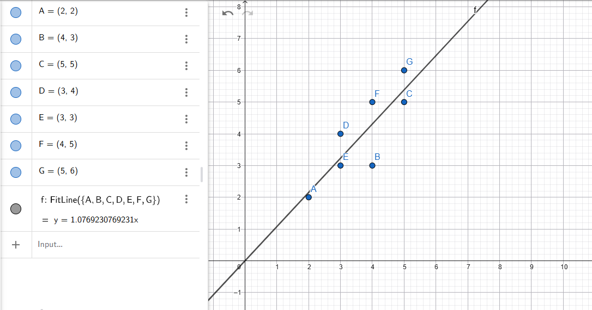

Regresi Linear — Catatan Lengkap & Rinci#
Tujuan Dokumen: Memahami regresi linear secara mendalam, mulai dari konsep dasar, derivasi matematis, perhitungan manual dengan matriks, hingga implementasi Python.
0. Apa Itu Regresi Linear?#
Regresi linear adalah metode statistika dan machine learning yang digunakan untuk memodelkan hubungan antara satu atau lebih variabel input (fitur/prediktor) dengan satu variabel output (target/respons) melalui sebuah garis lurus (atau hiperplane pada dimensi tinggi).
Mengapa Regresi Linear?#
Sederhana dan interpretatif: Koefisiennya mudah dipahami secara langsung.
Efisien secara komputasi: Solusinya bisa dihitung secara analitik (closed-form).
Fondasi penting: Menjadi dasar dari banyak metode lanjutan (Ridge, Lasso, Logistic Regression, Neural Network).
Kapan Menggunakannya?#
Situasi |
Cocok? |
|---|---|
Hubungan antara X dan Y bersifat linear |
Ya |
Target Y kontinu (harga, suhu, jarak) |
Ya |
Target Y kategorikal (ya/tidak) |
Tidak (gunakan Logistic Regression) |
Hubungan sangat non-linear |
Kurang tepat |
1. Konsep Dasar: Persamaan Garis Regresi#
1.1 Model Matematis#
Untuk regresi linear sederhana (1 fitur), persamaan modelnya adalah:
Di mana:
Simbol |
Nama |
Penjelasan |
|---|---|---|
\(y\) |
Target / Variabel Dependen |
Nilai yang ingin diprediksi |
\(x\) |
Fitur / Variabel Independen |
Data input yang diketahui |
\(\beta_0\) |
Intercept |
Nilai \(y\) saat \(x = 0\) (titik potong sumbu Y) |
\(\beta_1\) |
Slope / Kemiringan |
Perubahan \(y\) untuk setiap kenaikan 1 satuan \(x\) |
\(\varepsilon\) |
Error / Residual |
Selisih antara nilai aktual dan nilai prediksi |
1.2 Interpretasi Slope dan Intercept#
\(\beta_1 > 0\) : Hubungan positif — saat \(x\) naik, \(y\) juga naik.
\(\beta_1 < 0\) : Hubungan negatif — saat \(x\) naik, \(y\) turun.
\(\beta_1 = 0\) : Tidak ada hubungan linear antara \(x\) dan \(y\).
\(\beta_0\) : Titik awal garis. Dalam konteks tertentu mungkin tidak bermakna fisik (misalnya jika \(x = 0\) tidak mungkin terjadi).
1.3 Apa Itu Residual?#
Residual (\(\varepsilon_i\)) adalah selisih antara nilai \(y\) aktual (dari data) dengan nilai \(\hat{y}\) yang diprediksi oleh model:
Tujuan regresi linear adalah meminimalkan total residual agar garis prediksi sedekat mungkin dengan semua titik data.
2. Fungsi Biaya: Least Squares (Kuadrat Terkecil)#
2.1 Kenapa Meminimalkan Kuadrat?#
Kita tidak bisa hanya menjumlahkan residual \(\sum \varepsilon_i\) karena nilai positif dan negatif akan saling menghapus. Solusinya adalah meminimalkan Sum of Squared Errors (SSE):
Mengkuadratkan residual membuat semua error menjadi positif dan memberikan penalti lebih besar pada error yang besar (karena dikuadratkan).
2.2 Ilustrasi Residual#
y
| * <- data aktual
| /|
| / | <- residual (jarak vertikal)
| / |
|----*---+--- garis prediksi y = b0 + b1*x
|
+------------ x
Residual adalah jarak vertikal dari setiap titik data ke garis regresi.
3. Perhitungan Secara Analitik (Metode Matriks — Normal Equation)#
3.1 Setup Data Koordinat#
Berdasarkan grafik koordinat plot, berikut adalah data titik \((x, y)\):
Titik |
Nilai \(X\) (Fitur) |
Nilai \(Y\) (Target) |
|---|---|---|
A |
2 |
2 |
B |
4 |
3 |
C |
5 |
5 |
D |
3 |
4 |
E |
3 |
3 |
F |
4 |
5 |
G |
5 |
6 |
Total data: \(n = 7\) titik.
3.2 Mengapa Menggunakan Notasi Matriks?#
Ketika ada banyak titik data dan banyak fitur, menghitung \(\beta_0\) dan \(\beta_1\) satu per satu tidak praktis. Notasi matriks memungkinkan kita menghitung semua koefisien sekaligus dengan satu formula ringkas:
Formula ini disebut Normal Equation — solusi analitik (closed-form) yang langsung memberikan nilai \(\beta\) optimal tanpa iterasi.
Langkah A: Menyusun Matriks \(X\) dan Vektor \(Y\)#
Matriks \(X\) berukuran \(7 \times 2\):
Kolom 1: Diisi angka \(1\) untuk semua baris — ini adalah kolom bias yang memungkinkan model menghitung intercept \(\beta_0\).
Kolom 2: Diisi nilai \(x\) dari setiap titik data.
Mengapa kolom 1 diisi angka 1? Karena persamaan \(y = \beta_0 \cdot 1 + \beta_1 \cdot x\), sehingga angka 1 adalah “nilai fitur” untuk intercept.
Matriks \(X\) berukuran \(7 \times 2\) (7 baris data, 2 kolom: bias + fitur \(x\)), dan vektor \(Y\) berukuran \(7 \times 1\).
Langkah B: Menghitung \(X^T X\)#
Transpose matriks \(X\) (ukuran \(2 \times 7\)) dikalikan dengan \(X\) asli (ukuran \(7 \times 2\)) menghasilkan matriks berukuran \(2 \times 2\).
Secara umum, hasil \(X^T X\) adalah:
Menghitung satu per satu:
\(n = 7\) (jumlah data)
\(\sum x_i = 2 + 4 + 5 + 3 + 3 + 4 + 5 = 26\)
\(\sum x_i^2 = 2^2 + 4^2 + 5^2 + 3^2 + 3^2 + 4^2 + 5^2 = 4 + 16 + 25 + 9 + 9 + 16 + 25 = 104\)
Catatan: Matriks \(X^T X\) selalu simetris (elemen off-diagonal sama). Ini adalah properti matematika yang selalu berlaku.
Langkah C: Menghitung \(X^T Y\)#
Transpose \(X\) (ukuran \(2 \times 7\)) dikalikan dengan vektor \(Y\) (ukuran \(7 \times 1\)) menghasilkan vektor ukuran \(2 \times 1\).
Secara umum hasilnya adalah:
Menghitung satu per satu:
\(\sum y_i = 2 + 3 + 5 + 4 + 3 + 5 + 6 = 28\)
\(\sum x_i y_i = (2 \times 2) + (4 \times 3) + (5 \times 5) + (3 \times 4) + (3 \times 3) + (4 \times 5) + (5 \times 6)\)
Langkah D: Menghitung Invers \((X^T X)^{-1}\)#
Untuk matriks \(2 \times 2\) dengan bentuk \(\begin{bmatrix} a & b \\ c & d \end{bmatrix}\), rumus inversnya adalah:
Langkah D.1 — Hitung Determinan:
Penting: Jika determinan = 0, matriks tidak bisa diinvers (singular), artinya data memiliki masalah seperti multikolinearitas (fitur-fitur yang saling berkorelasi sempurna).
Langkah D.2 — Hitung Invers:
Langkah E: Menghitung Koefisien \(\hat{\beta}\)#
Perkalian matriks (baris kali kolom):
Setiap elemen hasil dihitung dengan mengalikan baris matriks kiri dengan kolom vektor kanan, lalu dijumlahkan:
Baris 1 \((\beta_0)\): \((104 \times 28) + (-26 \times 112) = 2912 - 2912 = 0\)
Baris 2 \((\beta_1)\): \((-26 \times 28) + (7 \times 112) = -728 + 784 = 56\)
Interpretasi Hasil#
\(\beta_0 = 0\): Garis regresi melewati titik origin \((0, 0)\). Artinya ketika \(x = 0\), prediksi \(y\) juga \(0\).
\(\beta_1 \approx 1{,}0769\): Setiap kenaikan 1 satuan pada \(x\), nilai \(y\) diprediksi naik sekitar \(1{,}0769\) satuan.
Sehingga persamaan garis regresi adalah:

Gambar 1. Visualisasi titik data A sampai G beserta garis regresi \(\hat{y} = 1{,}076923x\).
4. Verifikasi: Nilai Prediksi dan Residual#
Untuk memvalidasi model, kita hitung nilai \(\hat{y}\) dan residual \(\varepsilon\) untuk setiap titik:
Titik |
\(x\) |
\(y\) aktual |
\(\hat{y} = 1{,}0769x\) |
Residual \(\varepsilon = y - \hat{y}\) |
\(\varepsilon^2\) |
|---|---|---|---|---|---|
A |
2 |
2 |
2,1538 |
-0,1538 |
0,0237 |
B |
4 |
3 |
4,3077 |
-1,3077 |
1,7101 |
C |
5 |
5 |
5,3846 |
-0,3846 |
0,1479 |
D |
3 |
4 |
3,2308 |
+0,7692 |
0,5917 |
E |
3 |
3 |
3,2308 |
-0,2308 |
0,0532 |
F |
4 |
5 |
4,3077 |
+0,6923 |
0,4793 |
G |
5 |
6 |
5,3846 |
+0,6154 |
0,3787 |
Total |
SSE = 3,3846 |
Model yang baik memiliki residual kecil dan tidak berpola (acak). Residual yang berpola mengindikasikan model yang kurang tepat.
5. Ukuran Kebaikan Model#
5.1 Koefisien Determinasi \(R^2\)#
\(R^2\) mengukur seberapa besar variasi data \(y\) yang dapat dijelaskan oleh model. Nilainya antara 0 hingga 1.
Di mana:
\(\text{SSE} = \sum (y_i - \hat{y}_i)^2\) — total error setelah model diterapkan
\(\text{SST} = \sum (y_i - \bar{y})^2\) — total variasi data dari rata-ratanya
Cara membacanya:
\(R^2 = 1\) — Model sempurna, semua titik tepat di garis.
\(R^2 = 0\) — Model tidak lebih baik dari hanya memprediksi rata-rata \(\bar{y}\).
\(R^2 = 0{,}85\) — Model menjelaskan 85% variasi data.
5.2 Mean Squared Error (MSE) dan RMSE#
MSE dalam satuan yang dikuadratkan. Untuk satuan yang sama dengan data, gunakan RMSE:
6. Implementasi Python dengan sklearn#
Berikut adalah skrip Python lengkap dengan penjelasan setiap baris kode:
import numpy as np
from sklearn.linear_model import LinearRegression
import matplotlib.pyplot as plt
# ===================================================
# BAGIAN 1: PERSIAPAN DATA
# ===================================================
# Data koordinat: A(2,2), B(4,3), C(5,5), D(3,4), E(3,3), F(4,5), G(5,6)
# reshape(-1, 1) mengubah array 1D menjadi kolom 2D agar sklearn bisa menerimanya
X_features = np.array([2, 4, 5, 3, 3, 4, 5]).reshape(-1, 1)
Y_targets = np.array([2, 3, 5, 4, 3, 5, 6])
print("Bentuk matriks X:", X_features.shape) # Output: (7, 1)
print("Bentuk vektor Y :", Y_targets.shape) # Output: (7,)
# ===================================================
# BAGIAN 2: REGRESI DENGAN SKLEARN
# ===================================================
print("\n" + "="*55)
print("PROSES 1: SKLEARN - LinearRegression")
print("="*55)
# Inisialisasi model
# fit_intercept=True (default) artinya sklearn menghitung beta_0 secara otomatis
lr_model = LinearRegression(fit_intercept=True)
# Proses training (fitting) — sklearn menerapkan Normal Equation di balik layar
lr_model.fit(X_features, Y_targets)
# Mengambil nilai koefisien hasil training
b0_sklearn = lr_model.intercept_ # Intercept (beta_0)
b1_sklearn = lr_model.coef_[0] # Slope (beta_1) — coef_ adalah array, ambil elemen pertama
print(f"Intercept (beta_0) : {b0_sklearn:.10f}")
print(f"Slope (beta_1) : {b1_sklearn:.10f}")
print(f"Persamaan : y_hat = {b0_sklearn:.4f} + {b1_sklearn:.4f} * x")
# Menghitung R^2 Score (koefisien determinasi)
r2 = lr_model.score(X_features, Y_targets)
print(f"R^2 Score : {r2:.6f}")
# Membuat prediksi
Y_pred = lr_model.predict(X_features)
print("\nPerbandingan Aktual vs Prediksi:")
for i, (xi, yi, yp) in enumerate(zip(X_features.flatten(), Y_targets, Y_pred)):
print(f" Titik {chr(65+i)}: x={xi}, y_aktual={yi}, y_hat={yp:.4f}, residual={yi-yp:.4f}")
# ===================================================
# BAGIAN 3: VALIDASI DENGAN NORMAL EQUATION (NumPy)
# ===================================================
print("\n" + "="*55)
print("PROSES 2: VALIDASI ANALITIK - Normal Equation (NumPy)")
print("="*55)
# Menambahkan kolom bias (angka 1) ke matriks X
kolom_bias = np.ones((X_features.shape[0], 1))
X_matriks = np.hstack((kolom_bias, X_features)) # Matriks X berukuran (7, 2)
print("Matriks X (dengan kolom bias):")
print(X_matriks)
# Menerapkan Normal Equation: beta_hat = inv(X^T X) * X^T Y
XT_X = np.dot(X_matriks.T, X_matriks) # (2x7) @ (7x2) = (2x2)
XT_Y = np.dot(X_matriks.T, Y_targets) # (2x7) @ (7,) = (2,)
beta_analitik = np.dot(np.linalg.inv(XT_X), XT_Y)
b0_analitik = beta_analitik[0]
b1_analitik = beta_analitik[1]
print(f"\nMatriks X^T X :\n{XT_X}")
print(f"\nVektor X^T Y : {XT_Y}")
print(f"\nDeterminan : {np.linalg.det(XT_X):.4f}")
print(f"\nIntercept (beta_0): {b0_analitik:.10f}")
print(f"Slope (beta_1): {b1_analitik:.10f}")
print(f"Persamaan : y_hat = {b0_analitik:.4f} + {b1_analitik:.4f} * x")
# ===================================================
# BAGIAN 4: VISUALISASI
# ===================================================
x_line = np.linspace(0, 6, 100)
y_line = b0_sklearn + b1_sklearn * x_line
plt.figure(figsize=(8, 6))
plt.scatter(X_features, Y_targets, color='steelblue', s=100, zorder=5, label='Data Aktual')
# Anotasi setiap titik
for i, (xi, yi) in enumerate(zip(X_features.flatten(), Y_targets)):
plt.annotate(chr(65+i), (xi, yi), textcoords="offset points", xytext=(8, 5), fontsize=11)
plt.plot(x_line, y_line, color='tomato', linewidth=2,
label=f'y_hat = {b1_sklearn:.4f}x')
plt.xlabel('x', fontsize=12)
plt.ylabel('y', fontsize=12)
plt.title('Regresi Linear - Data Titik A sampai G', fontsize=14)
plt.legend()
plt.grid(True, alpha=0.4)
plt.tight_layout()
plt.savefig('regresi_linear.png', dpi=150)
plt.show()
7. Kesimpulan Analisis Perbandingan#
Ketiga metode menghasilkan nilai yang identik dan konsisten:
Parameter |
Hasil GeoGebra |
Perhitungan Analitik (Matriks) |
Hasil |
|---|---|---|---|
Intercept \(\beta_0\) |
\(0\) |
\(0{,}0000000000\) |
\(0{,}0000000000\) |
Slope \(\beta_1\) |
\(1{,}0769230769\) |
\(1{,}0769230769\) |
\(1{,}0769230769\) |
Persamaan |
\(\hat{y} = 1{,}0769x\) |
\(\hat{y} = 1{,}0769x\) |
\(\hat{y} = 1{,}0769x\) |
Kesimpulan Akhir: Nilai \(\beta_0 = 0\) menunjukkan bahwa garis regresi melewati titik asal koordinat \((0, 0)\), sedangkan \(\beta_1 \approx 1{,}0769\) berarti setiap pertambahan 1 satuan pada \(x\) akan meningkatkan nilai \(y\) sebesar \(\approx 1{,}077\) satuan. Ketiga pendekatan — GeoGebra, Normal Equation manual, dan
sklearn— menghasilkan hasil yang sinkron sempurna, membuktikan keabsahan formula Normal Equation sebagai solusi optimal regresi linear.
8. Ringkasan Formula Penting#
Formula |
Keterangan |
|---|---|
\(\hat{y} = \beta_0 + \beta_1 x\) |
Persamaan garis regresi |
\(\hat{\beta} = (X^T X)^{-1} X^T Y\) |
Normal Equation |
\(\varepsilon_i = y_i - \hat{y}_i\) |
Residual / Error |
\(\text{SSE} = \sum \varepsilon_i^2\) |
Sum of Squared Errors |
\(R^2 = 1 - \dfrac{\text{SSE}}{\text{SST}}\) |
Koefisien Determinasi |
Catatan dibuat menggunakan data 7 titik: A(2,2), B(4,3), C(5,5), D(3,4), E(3,3), F(4,5), G(5,6)